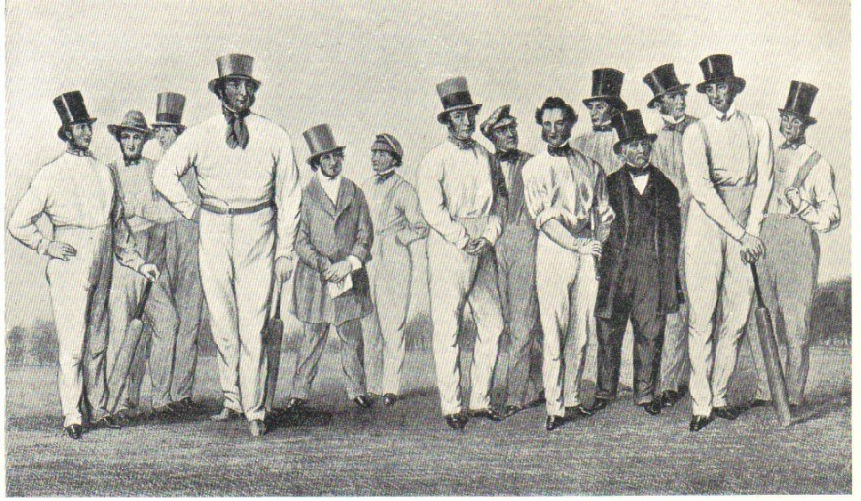
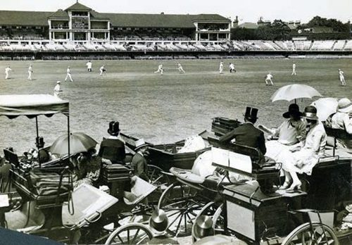
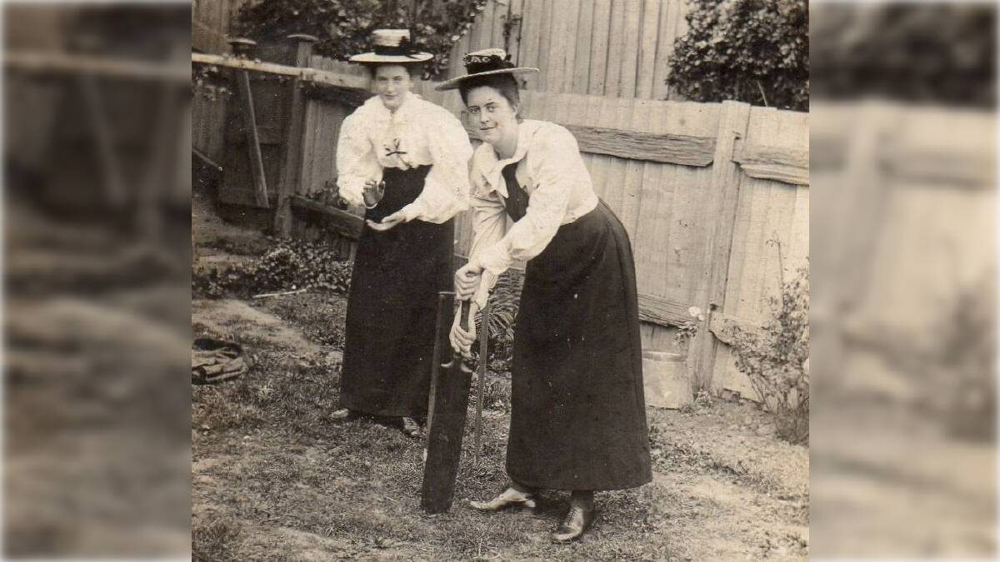
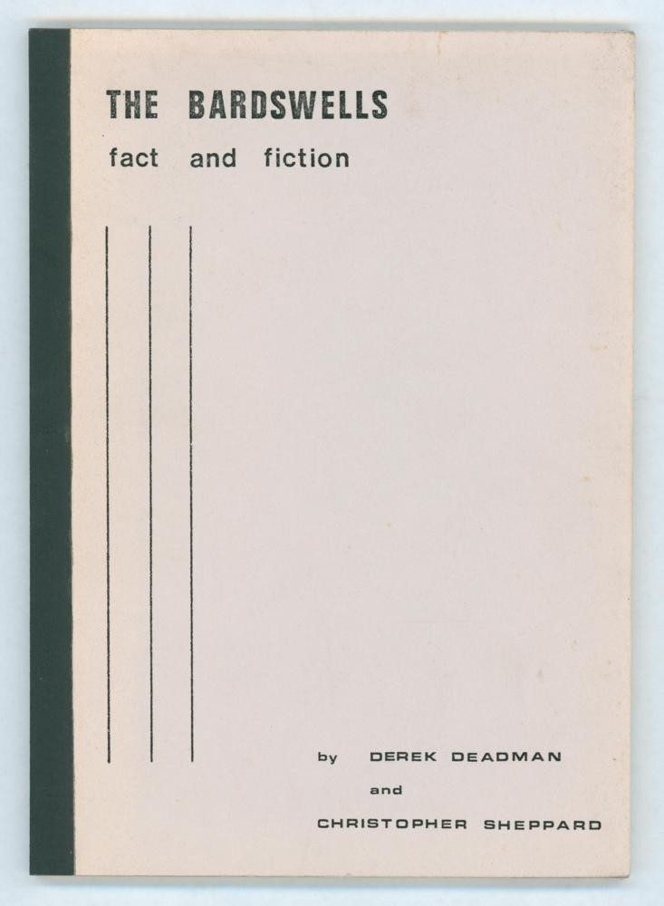
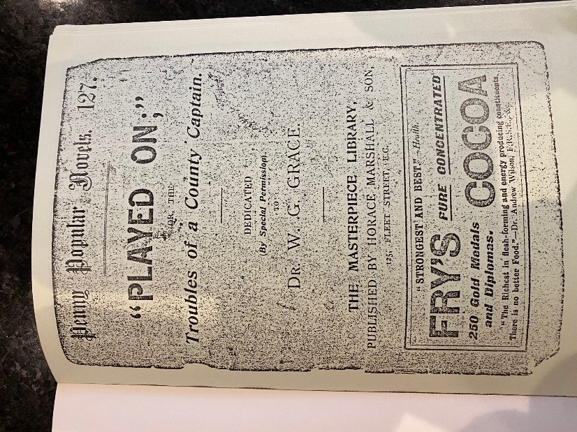
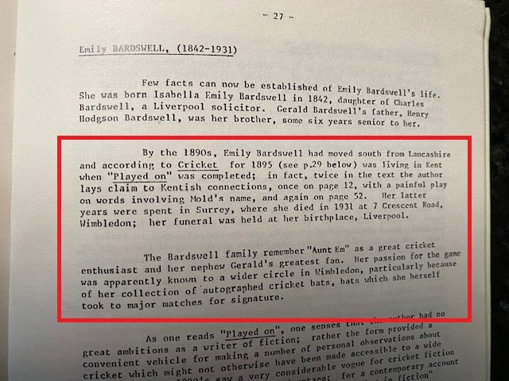

Played On, and the woman who wrote it
The Books
Played On
Played On is a story with two main characters; Anthony Christie, the captain of the Dapplesex (Sussex) county cricket team and his sister, Beatrice.
Although fictional, it is an accurate illustration of the social background to cricket in the 1890s, the author highlighting strong themes including social etiquette, the class divide and gender inequality.
In many ways, it is hard not to think of Beatrice Christie as the author Emily Bardswell, for she is undoubtedly a fanatical female cricket fan.
Some highlights from Played On:
The class divide

The author shows a clear knowledge of the conventions relating to the class divide and the relative status of Amateur and Professional players. When the Dapplesex team travels for a game in the north of England, she notes that amateur and professional players travel on the same train but in separate classes and having found separate accomodation there, they would not normally meet until arrival at the ground.
Bardswell is also damning of the playing conditions on the field - “amateurs by one gate and professionals by another, the most inequitous of arrangements’ . reflecting the fact the social divide extended to the game itself.
Problems at Lords
‘I can be ready to start for Lords as soon as you like ..’ says Beatrice, after receiving an invite from wealthy acquaintances to a game.

In a reflection of how much things have changed since the 1890’s, wealthy aristocrats and elite families drove their horse-drawn carriages right into the ground.
These coaches were parked in rows along the perimeter of the playing boundary, but because demand was so high, the coaches were parked several rows deep and if your host's coach was assigned to the second or third row back, your view of the pitch was entirely cut off by the vehicles parked directly in front of you.
Initially, Beatrice thinks she will have a fine vantage point but as Bardswell describes the situation 'The coach had two others in front of it; ladies with parasols, and gentleman with tall hats covered them both. The supposed coign of vantage, was no vantage at all - it was simply impossible for her to see anything of the play!'
Gender Inequality
‘I can’t bear to miss a ball ..’ said Beatrice, almost crying.
When Beatrice realises that her hosts are more interested in the social aspects of attending the match for social engagment and plan to arrive in time ‘for luncheon’, Beatrice’s position as someone reliant on others is laid bare.
As the author laments on non-cricket fans ‘They are satisfied if they never see a ball bowled in first-class cricket. But to others it is terrible to feel the summer slipping by – to hear of the matches that are taking place, to read of them, to think of them, and not go and see them! How we go on hoping against hope that something, will turn up, someone will surely think of us in our loneliness and ask us to go with them?’
Deadman and Sheppard’s comment on this incident in the reprint is apt – “Beatrice’s problems are almost certainly the authors! In this instance, we see the essentially dependent position of the female cricket enthusiast of the late victorian period, unable to go to a match in her own time or unaccompanied, unable to move to a better vantage point if her view is obscured. The social etiquette of the times. “
The love of cricket

Throughout Played On, Beatrice’s (and Emily’s) love of cricket shine through:
‘How doubly precious to us who love cricket are the last days of August! How we treasure every hour that is left to us before shortening days and gathering fogs render grounds unfit to play, and autumn winds blow away the last remants of the summer that is past. We enjoy the game then with a keenness that not even the commencement of the season can rival, for we count the days that are left to us, we would make the utmost of each one, and draw out their delight to the very end.’
‘How hard it is when our county is playing in some quite-easily accessible place and we cannot go to see it! Oh, the sickening longing to be there! How hard it is to go about cheerfully and be good-tempered when we have to wear through the long summer day, as best we can, at home, and wait till the next day’s paper before we can even know what has happened!
‘There are people – many of them charming in every other way – who take no interest in cricket, who know nothing of this feeling, who think one match as good as another, who are content when they do go to drop in for an hour or so in the afternoon, and call that ‘seeing the match!”
‘And the few days we of cricket that do come to us, how doubly we enjoy them, how we look forward to them months beforehand, and pray for fine weather; how we live on their memory, and go through them in thought again and again; how we store up recollections for the long winter.
The Reprint


When Derek Deadman and Christopher Sheppard published 'The Bardswells: Fact and Fiction, in 1979, the print run was limited to just 50 copies.
It is noteworthy that the reprint of ‘Played on’ was done via the cheaper, mass-produced, Penny Popular Novel version, perhaps a reflection on the scarcity of the hardback version.
We will come to the significance of this later.

Third, as stated in the above image, Emily Bardswell lived at 7 Crescent Road, Wimbledon. In a strange quirk of fate, not only did W.T. Stead live in nearby Wimbledon Park but the researcher Neal Whittle was born in Wimbledon, in 1965.
Finally and most importantly, the next paragraph states that ‘The Bardswell family remember ‘Aunt Em’ as a great cricket enthusiast and her nephew Gerald’s greatest fan. Her passion for the game was apparently known to a wider circle in Wimbledon, particularly because of her collection of autographed cricket bats, bats which she herself took to major matches for signature.
This is the first time anyone had ever mentioned Emily Bardswell’s collection of bats and 27 years after the Deadman/Sheppard reprint was published, one of those bats was offered for sale.